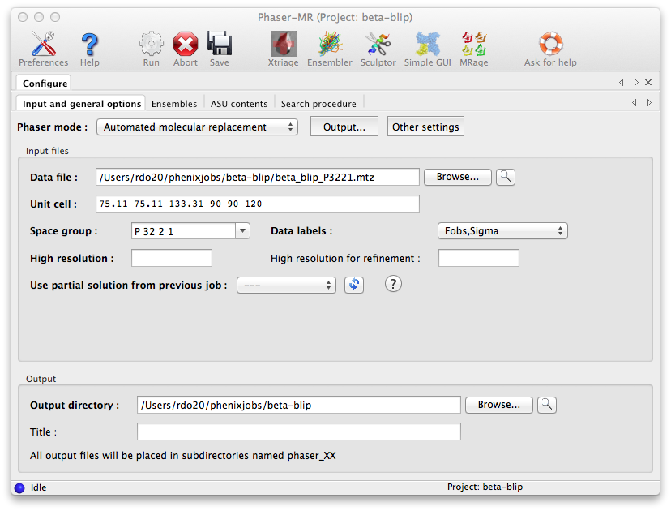
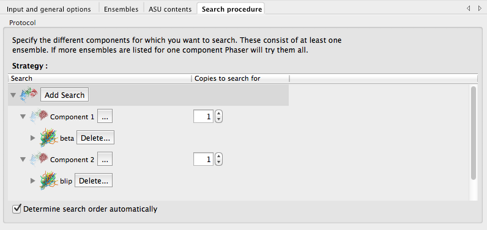
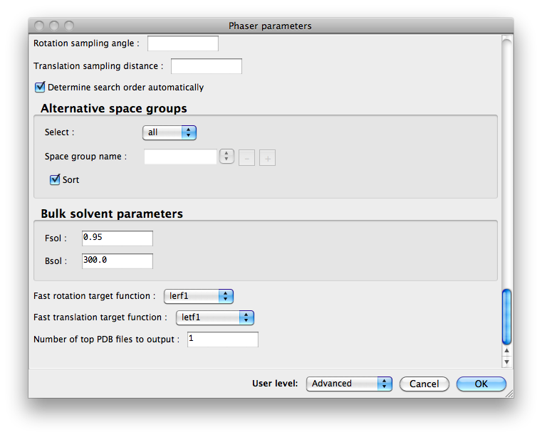

MRage presents a user-friendly and automated frontend to Phaser, but especially difficult cases may require finer control over parameters. The Phaser-MR GUI exposes all options available in the standalone command-line Phaser software, and allows use of additional modes besides MR_AUTO. It can, for instance, be used to search for individual components one at a time with modified parameters, or run each stage of the search (rotation, translation, packing, phasing+refinement) separately.
There is also a simplified GUI for structures with only one component in the crystal, allowing the relevant files to be dragged and dropped into the interface. This should only be used for such simple cases, and when no difficulties are anticipated.
This document only covers configuration of the Phaser GUI; for a detailed explanation of the various terms and search procedures referenced here as well as interpretation of results, consult the overview of molecular replacement in PHENIX (especially the discussion of "ensembles" and "ASU contents"), the Phaser documentation, or the Phaser WIKI. Some common user questions are discussed at the end of this section, and in the MR overview page. New users looking for a step-by-step introduction should read the Phaser-MR tutorial.
The tutorial video is available on the Phenix YouTube channel and covers the following topics:
The input section is similar to that of MRage, with separate sections for reflection data, search ensembles, and scattering information. Unlike the command-line version of Phaser, the experimental data may be any file format, and both intensities and amplitudes (with or without anomalous data) are allowed. The default mode is "Automated molecular replacement" (MR_AUTO); some of the other modes require only a subset of the parameters displayed.

All modes require a description of the search ensembles, either as PDB files (singly, or superimposed as an ensemble), or map coefficients in MTZ format (e.g. for phasing using a low-resolution EM map). Adding an ensemble does not automatically include it in the search; you may, for instance, supply several alternate ensembles for a chain, and instruct Phaser to try each in turn (see below).
You must also define the contents of the asymmetric unit (ASU); this is usually done by supplying information about the sequence (one chain at a time), mass, or type and number of residues. Alternatively, you may give the fractional ASU contents of each search ensemble, if known. It is also possible to additionally specify heavy atoms that contribute to scattering, but this is rarely necessary. Note that the ASU contents data does not necessarily have a 1:1 correspondence with the search ensembles (see FAQ list below for details). Even if you are only searching for a single ensemble out of several (e.g. the protein in a protein-DNA complex), you must still supply the expected ASU contents of the entire crystal, because Phaser needs to know what fraction of the whole crystal content each search model comprises.
Finally, the "Search procedure" tab defines the steps in the MR search, selected from each input ensemble. This is organized as a tree-like table with search components as main branches. Expanding a component branch displays the ensembles used for the searches. Expanding an ensemble branch displays the name of the ensemble's constituent coordinate files or the name of the electron density file. Specifying more than one ensemble per component will result in the ensemble yielding the best solution being used. You do not need to search for all ensembles at once, as described below.

The "Output" button at the top of the window controls basic behavior such as the resulting file names and verbosity. All other parameters are set by clicking the "Other settings" button, which will open a large dialog window with assorted controls. (Like most such windows in the Phenix GUI, only a subset of basic controls may be displayed at first, but this can be changed by selecting options in the "User level" menu at the bottom of the window.) The available parameters will be slightly different depending on which mode you have selected.

Phaser can be instructed to start from a previous partial solution; this does not use a partial PDB file, but rather the saved results of a previous run. For example, a two-part MR solution may be obtained by running in MR_AUTO mode to place one ensemble, then modifying the parameters, selecting the previous run as the partial solution, and searching for the second ensemble. To do this, select the result which you want to use as input from the menu labeled "Use partial solution from previous job" (all previous Phaser jobs for the current project will be listed in the menu). It is best to do this by modifying the configuration of the GUI from the previous Phaser run instead of starting from scratch, because the stored solutions do not contain the definitions of the search ensembles. This means that the existing ensemble definitions must be left unchanged when defining any ensembles needed for further searches.
You may also run each mode separately, e.g. the fast rotation function followed by the fast translation function using the previous result, and so on. There are some restrictions on which modes may use which results, thus you may not follow a fast rotation function with packing analysis.
A summary of your Phaser molecular replacement results can be found in the very last section of your Phaser-MR log file. It may look something like this, where everything between "AUTOMATED MOLECULAR REPLACEMENT" and "Citations for Phaser:" is part of the summary:
*** Phaser Module: AUTOMATED MOLECULAR REPLACEMENT 2.8.3 *** *************************************************************************** ** SINGLE solution ** Solution written to PDB file: GUI_crystals_phaser.1.pdb ** Solution written to MTZ file: GUI_crystals_phaser.1.mtz Solution annotation (history): SOLU SET RF*0 TF*0 LLG=8776 TFZ==67.6 PAK=1 LLG=8776 TFZ==67.6 SOLU SPAC I 4 SOLU 6DIM ENSE ense_1 EULER 0.0 0.0 0.0 FRAC -1.00 -0.00 -1.00 BFAC -1.03 #TFZ==67.6 SOLU ENSEMBLE ense_1 VRMS DELTA -0.1435 #RMSD 0.45 #VRMS 0.24 CPU Time: 0 days 0 hrs 0 mins 13.59 secs ( 13.59 secs) Finished: Sun Sep 28 10:32:36 2025 -------------------- EXIT STATUS: SUCCESS -------------------- CPU Time: 0 days 0 hrs 0 mins 13.59 secs ( 13.59 secs) Finished: Sun Sep 28 10:32:36 2025 </pre> </html> Citations for Phaser:
Here are the elements of this Phaser-MR summary:
1. Summary. The first thing you should note about your Phaser-MR result is whether you have found a single solution or multiple solutions:
** SINGLE solution
The run in this example Phaser-MR run yielded a single solution. Typically a run with a single solution is a confident run. A run with more than one solution (indicated by a line such as "There were 21 solutions") is typically low-confidence.
** Solution written to PDB file: GUI_crystals_phaser.1.pdb ** Solution written to MTZ file: GUI_crystals_phaser.1.mtz
The output mtz file from Phaser-MR molecular replacement will contain the input X-ray data as well as coefficients for a sigmaA-weighted map.
Solution annotation (history): SOLU SET RF*0 TF*0 LLG=8776 TFZ==67.6 PAK=1 LLG=8779 TFZ==70.2 SOLU SPAC I 4 SOLU 6DIM ENSE ense_1 EULER 0.0 0.0 0.0 FRAC -1.00 -0.00 -1.00 BFAC -1.03 #TFZ==67.6 SOLU ENSEMBLE ense_1 VRMS DELTA -0.1 #RMSD 0.7 #VRMS 0.6
The first line of this history gives the initial LLG and TFZ of the solution (8776 and 67.6), followed by the values after refinement (8779 and 70.2). The space group of the solution was I4. The rotation and translations are represented by the EULER and FRAC values. The VRMS is the refined RMS variance, RMSD is the input RMSD value, and DELTA is the shift with respect to this RMSD.
After molecular replacement with Phser-MR, you are looking for a high final LLG value (60 or more usually indicates a confident solution), and a high TFZ (a good value may be in the range of 7 or more). Make sure the space group is plausible. You should expect your VRMS value to be similar to the input RMSD (small DELTA), and typically the VRMS value will be in the range of 0.5-1 for AlphaFold models and 1-2 for homology models.
After Phaser-MR molecular replacement if you have obtained a single solution with a high value of LLG (over 60) and a high TFZ (7 or more) then you will want to look at your solution in detail. Have a look at the sigmaA-weighted map that you can draw with the Phaser output mtz file, along with the output Phaser model in the pdb file, for example using Coot. The map should match the model reasonably well, though you should not expect an exact fit. Next you may want to refine the model with PhenixRefine, or you may want to automatically rebuild the model with AutoBuild, or you may want to rebuild by hand.
If you have obtained multiple solutions in Phaser-MR molecular replacement, or if your LLG value is low (under 40) or your TFZ is low (under 6), you may want to look carefully at your input data with Xtriage, check your data processing, and check your search models to make sure that you are working with the best possible data, the right space group, and the best available search models. You may want to try other sources of a search model, such as homology models or predicted models.
These are now covered on a separate section.